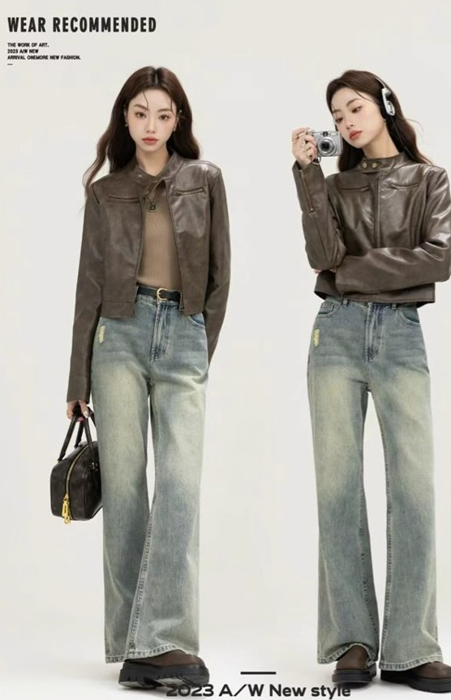
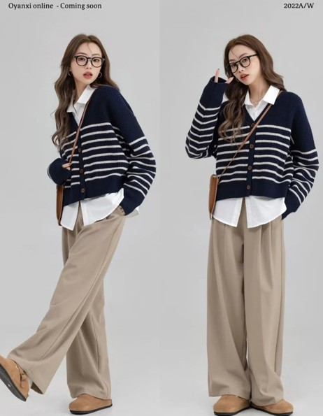
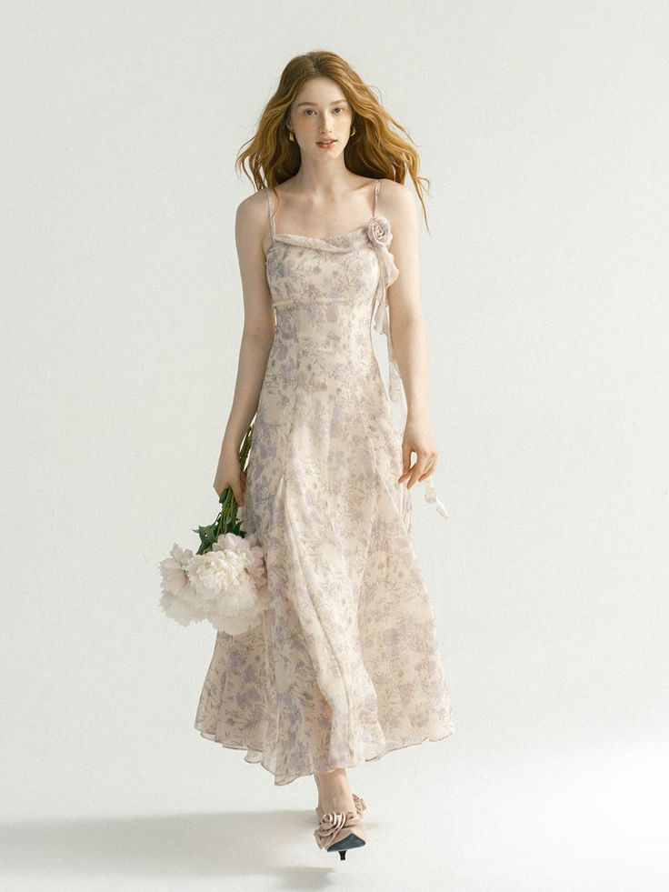
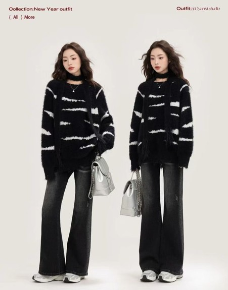
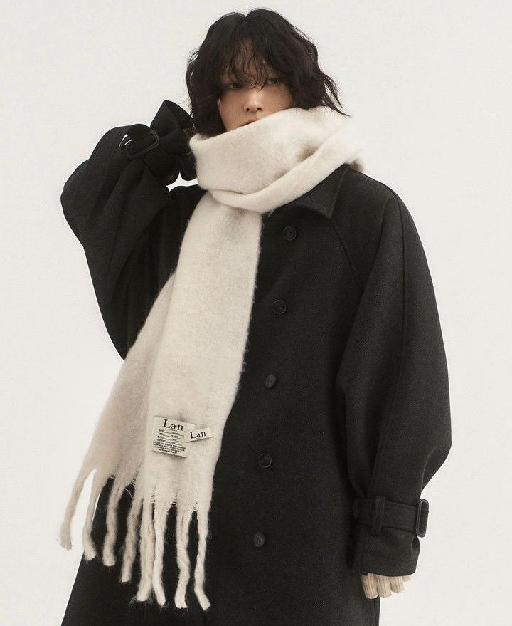
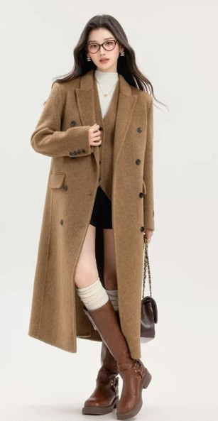
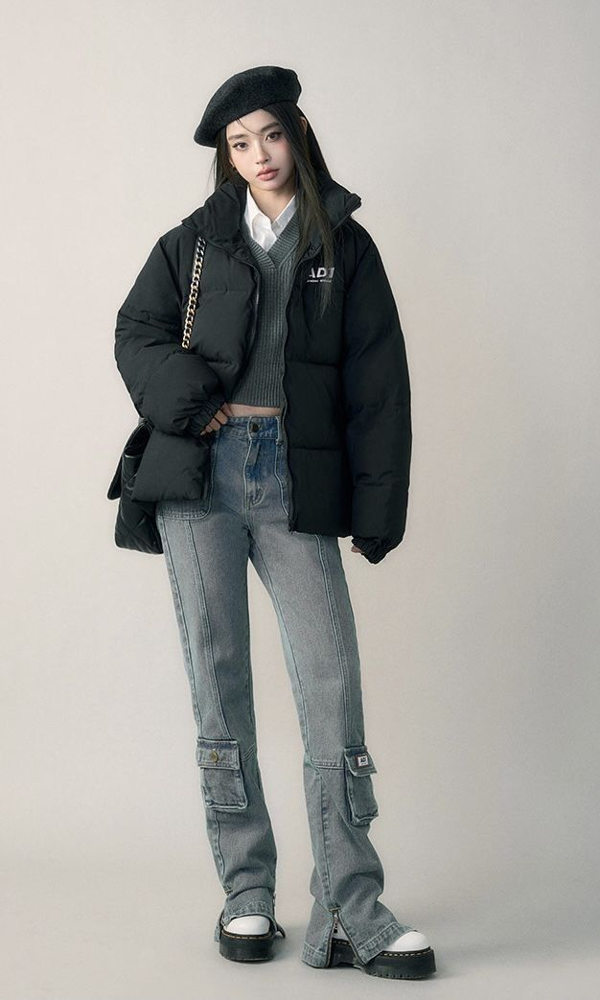
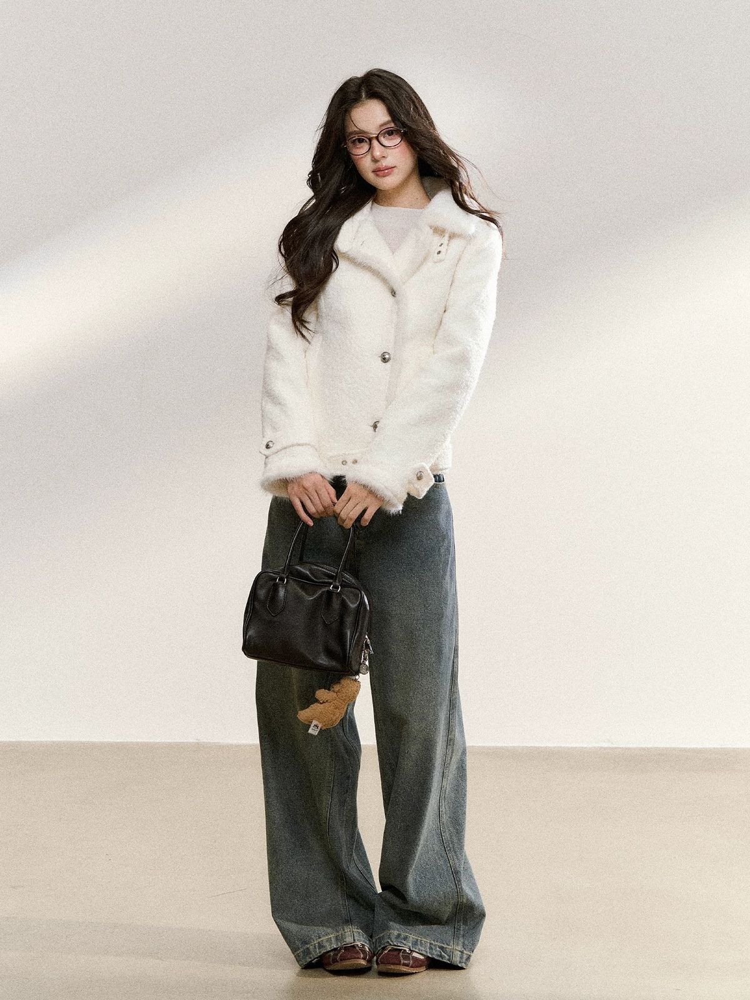

春季 / Spring
色針織上衣搭米白寬褲與亮色鞋款，溫暖柔和，呈現輕鬆的春日風。


街頭休閒風
T-shirt + 寬褲 + 球鞋
街頭 休閒

輕盈春日
薄外套 + 連衣裙
春季 輕盈簡約風格
簡單T恤 + 牛仔褲
簡約 舒適夏季 / Summer
黑白格紋短袖襯衫配白背心與寬版黑褲，清爽又俐落，帶有中性時髦感，夏日文青感十足。
海灘風
短褲 + 涼鞋
海灘 休閒
都市感
襯衫 + 休閒褲
都市 時尚

輕盈配件
草帽 + 涼鞋
輕盈 清爽秋季 / Autumn
溫暖針織與深色調單品，打造舒適又優雅的秋日造型。


秋日暖色
圓領毛衣 + 牛仔褲
秋季 溫暖

秋風輕拂
外套 + 圍巾
秋季 舒適秋冬混搭
針織毛衣 + 短靴
秋冬 時尚冬季 / Winter
厚重外套與圍巾，溫暖舒適，兼具時尚感。

冬季暖意
長大衣 + 靴子
冬季 暖意

冰雪時光
羽絨外套 + 圍巾
冬季 舒適

冬日輕便
外套 + 長褲
冬季 簡約